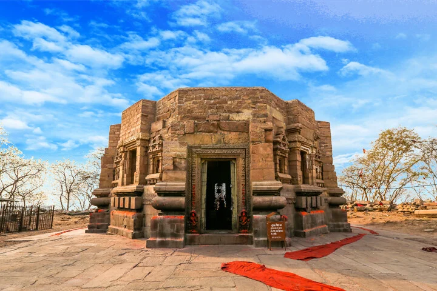

Mundeshwari Temple

Mundeshwari DEvi Temple
The legends and lore of India’s first temple – Mundeshwari temple
by Shabari Shankar | Posted on April 6, 2023
Are you familiar with the idea of time machines? Those fantastical inventions that can transport you back in time to witness the wonders and mysteries of the past? Well, what if I told you that there’s a place in India that can give you a glimpse into the ancient world without the need for a time machine? With a history dating back thousands of years, India has seen the rise and fall of numerous empires and civilisations. Each of the left behind a trail of magnificent structures that stand as a testimony to their grandeur. As a lover of history, I have always been fascinated by the rich cultural heritage of India. One of the most beautiful expressions of India’s rich heritage are its temples. When it comes to the first temple ever built in India, the answer lies in the heart of the country’s northern state of Bihar.
I was watching the news with my family when I stumbled upon the oldest temple in India. The oldest functional Indian temple happens to be the Mundeshwari Temple in Bihar. India’s first temple has been a subject of debate among historians. This primarily centred around the dating and attribution of the various ancient temples in India. As I learned more about this ancient temple, I was fascinated by its history. What intrigued me the most was the miracle that takes place in India’s first temple. So, let’s delve into the temple’s history and discover the secrets that lie within its ancient walls.
The Mundeshwari temple – A contested claim to India’s first temple.
The Mundeshwari Temple, located in the state of Bihar, is often cited as one of the oldest in India. The temple is dedicated to the worship of Lord Shiva. It is believed to have been originally built in the 6th century CE, during the Gupta Empire. The temple has undergone several renovations and additions over the centuries. The current structure dating back to the 10th or 11th century CE. However, some historians and archaeologists believe that the site may have been a place of worship even earlier. This is supported by evidence of prehistoric human settlement in the surrounding area. Supporters of this claim point to various pieces of archaeological evidence. This includes inscriptions and artifacts, that suggest the temple’s existence during this time
Despite these claims, there is still debate surrounding the age of the Mundeshwari Temple. This is because the exact age of its original construction is difficult. There were various renovations and additions that have taken place over the centuries. Some scholars argue that the temple’s distinctive architectural features, such as its square sanctum and circular mandapa, suggest an earlier origin than the 6th century CE. Others point to the temple’s location on an important trade route between northern and eastern India as evidence of its ancient origins. The ASI has recently dated the structure to 108 CE making it the oldest Hindu temple in the country.
Ultimately, while the Mundeshwari Temple is widely recognised as one of the oldest and most historically significant temples in India, the exact age of its original construction remains a matter of debate among scholars and historians.
Standing tall on the Mundeshwari Hills, the Mundeshwari Devi Temple has been an object of fascination for many due to its unique architecture and religious significance. The temple is believed to have been constructed in 625 CE, making it one of the oldest functional temples in India. The temple is built entirely of stone and has an octagonal shape, which is quite unusual for Hindu temples. The use of stone for construction is also noteworthy, as most temples in India are built using brick and mortar.
The temple’s architecture follows the Nagara style, which is characterized by a square base, a curvilinear superstructure, and a shikhara, or spire. The temple has eight projections at the corners, which form an octagon. The superstructure above the projections is conical in shape and has decorative motifs such as lotus petals, makaras (mythical creatures), and kalashas (pots). The temple’s sanctum sanctorum, or garbhagriha, houses the four-faced lingam of Lord Shiva and a niche with the idol of Devi Mundeshwari. The circular yoni-pitha, or base, is also noteworthy, as it has eight petals, each representing one of the eight directions.
The temple’s construction from a single rock is perhaps its most impressive feature. The rock is believed to be a type of granite that is found in the nearby hills. The rock was cut and carved using chisels and hammers, and the temple was built by stacking the cut pieces of rock on top of each other. This method of construction is known as dry masonry and was used extensively in ancient India. The temple’s age, architecture, and construction make it a fascinating subject of study for scholars and visitors alike.
The sacred marvel – The religious significance of India’s first temple
After delving into research on this historical gem, I was fascinated by the temple’s religious importance, since it is a significant pilgrimage site for both Hindus and Buddhists. The main deities worshipped in the temple are Devi Mundeshwari, a form of the goddess Durga, and Shiva as Viniteswara.
For Hindus, the temple represents the eternal union of Shiva and Parvati, the divine masculine and feminine energies of the universe. Devi Mundeshwari is believed to be a manifestation of Durga, the goddess of strength, power, and protection. She is worshipped as the supreme goddess who protects her devotees from evil and negativity. Shiva, on the other hand, is worshipped as the Lord of Destruction and Transformation, who represents the ultimate reality beyond the material world. For Buddhists, the temple is believed to have been a major pilgrimage site during the time of Gautama Buddha. The circular yoni-pitha in the temple is also believed to represent the Buddhist stupa, which symbolises the Buddha’s enlightened mind.
Devotees believe that worshipping the deity at the Mundeshwari Temple can bestow blessings of prosperity, good health, and spiritual enlightenment. It is also believed that the temple is a powerful source of positive energy, capable of healing people’s mental and physical ailments.
The Mundeshwari Temple has been witness to uninterrupted rituals and worship for centuries. Every year, a large number of pilgrims visit this sacred place to seek blessings from the deity, especially during the auspicious occasions of the Ramnavami and Shivratri festivals. The Navaratra fair held nearby is also a significant event that attracts thousands of devotees. The temple stands tall today as a symbol of the rich cultural and religious diversity of India, where different faiths and beliefs come together in harmony. Interestingly, the present caretaker of the temple is a Muslim, which is yet another example of religious harmony at the grassroots level in India.
A temple frozen in time – A glimpse into the history of the Mundeshwari Temple
The temple is believed to have been built during the Gupta Empire. This would be between the 4th and 5th centuries CE, making it one of the oldest surviving temples in India. Despite years of research and excavation, the temple’s origins remain unclear. While some historians believe that the temple was built during the Gupta Empire, others argue that it dates back to the Mauryan period.
The temple’s idol has been worshipped for over 2500 years, and there is a 3000-year-old tree fossil within its premises. Chinese visitor Huen Tsang wrote about a shrine flashing light on a hilltop around 636-38 CE. It was later identified as the Mundeshwari Temple. The first part of the broken Mundeshwari inscription was discovered in 1891-92 CE. The second part was found in 1903 CE.
Over time, the temple has undergone several modifications and renovations, reflecting the changing religious and cultural practices in the region. In 2003 CE, a Brahmi script royal seal of Sri Lankan king Dutthagamani (101-77 BCE) was discovered. It changed earlier findings about the history of the temple. The discovery of the Brahmi script royal seal of Sri Lankan king Dutthagamani in 2003 CE was a significant one. It challenged previous assumptions about the history of the Mundeshwari Temple. Before this discovery, scholars believed that the temple was built in the 5th or 6th century CE. However, the discovery of the royal seal suggested that the temple might be much older than previously thought, dating back to the 2nd or 1st century BCE.
Dutthagamani was a prominent Sri Lankan king who ruled between 101 and 77 BCE. He was known for his military conquests and his patronage of Buddhism. The discovery of the seal suggests that the temple might have been built during his reign or at least when he was a prominent figure in the region. The discovery of the royal seal of Dutthagamani was a significant one. It challenged previous assumptions about the history of the Mundeshwari Temple. The discovery added a new layer of complexity to its already rich history. Later, during the medieval period, it is believed that the temple was once again converted into a Hindu temple. This reflects the resurgence of Hinduism in the region.
One remarkable characteristic of the Mundeshwari Devi Temple is that it appears to have been spared from destruction during Muslim rule under Sher Shah in the surrounding area. Despite the presence of a nearby Muslim stronghold, the Chainpur fort, and evidence of Muslim communities in nearby villages during that time, the temple was left undamaged.
The temple’s current state of disrepair is due to natural factors. This is because of the passage of time rather than intentional damage by humans. Despite its long and complex history, the Mundeshwari Temple has remained an important pilgrimage site for Hindus and Buddhists alike.
The temple of legends – Tracing the mythical origins of India’s first temple
The Mundeshwari Temple is steeped in mythology, stories, and legends that add to its mystical allure. One of the most fascinating stories about the temple is that it was built by Lord Rama himself. It is believed that he visited the site during his exile. According to the legend, Lord Rama had a vision of Devi Mundeshwari, who instructed him to build a temple in her honour at the site. Rama then built the temple from a single rock, using his divine powers.
The temple’s association with Devi Mundeshwari is also the subject of several myths and legends. According to one legend, Devi Mundeshwari is an incarnation of the goddess Durga. She manifested at the site to defeat the demon Mahishasura. Another legend suggests that the temple was built to honour the goddess’s victory over a demon named Mund. It is believed that the goddess emerged from the demon’s head after he was slain. The temple was built to honour her